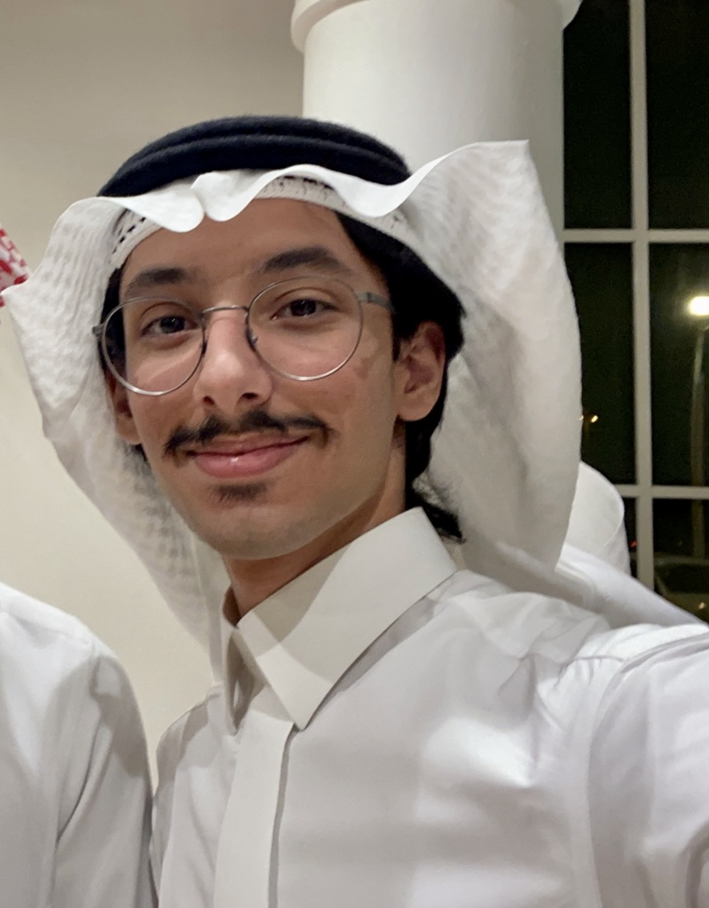

I'm working on my bachelor's in mathematics & computer science at Boston University,
currently based in Riyadh & Boston. I love making
projects that combine tech and
illustration.
Department of Computer Science,
Boston university
yazan@bu.edu